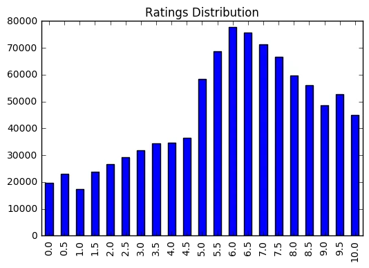

Winning two Machine Learning Challenges in the same month
February 2017 has been a really good month since I have had an opportunity to work on multiple machine learning challenges, hosted by Analytics Vidhya, and came out winning both of them. I wanted to share my experiences of participating in these challenges.
Analytics Roadshow MiniHack The first of these challenges was a mini-hack in which participants had three hours of time to build the most accurate predictive model that predicts surge pricing type for a taxi aggregator so that the matchmaking between the right cabs and right customers is quick and efficient.
After a quick exploration of data, I encoded the Gender, Type of Cab and Confidence Life Style Index to numerical values so that tree models could consume the data. A 3-hour challenge doesn’t give you too much room to start with feature engineering. Hence, I directly jumped to building models to quickly test what works and what doesn’t. Linear models and Random forests produced around 0.63 and 0.68 on both cross-validation and leaderboard respectively. However, these stood around top 30th percentile. XGBoost, once again outperformed other models and it put me one among top 5 on leaderboard within an hour of the challenge. However, it was difficult to make any improvements to this.
What didn’t work
2-way variable interactions especially between var1, var2, var3 didn’t improve the score. Feature selection didn’t add any value. Ensembling RFs with XGBs produced no good effect. In a lot of ways, I was stuck for a long time. 30 minutes to finish line. I dropped to 15th position among 170 participants.
What worked
As ensembling wasn’t working, I focused on improving my XGB model. I changed the min_child_weight parameter and voila! my score shot up. I was totally underfitting all the time, damn. I went up by 8 places. 15 minutes to go, I quickly lowered my learning_rate, my cross-validation score went up and it scored 2nd on LB! Falling short of time, I couldn’t add any other model. I was sure I didn’t overfit and I was delighted to see that my model was one of the most stable models on public and private and I scored 1st on private leaderboard.
Maybe, it ain’t over until it’s over.
Ref: https://datahack.analyticsvidhya.com/contest/minihack-machine-learning/lb
Source code here: https://github.com/binga/AnalyticsVidhya_Minihack
2 weekends later..
MLWare 2— Recommendation Challenge
This challenge was about building a model that predicts a given user’s ratings (from 0 to 10 stars) for a given item based on past ratings on other items and/or other information. The dataset approximately had one million data points and contained information about 40000 users, 120 items and the distribution of ratings was good enough to build a good recommendation engine.

As we were only given user_id, item_id and rating, there was no scope for feature engineering in this challenge. The data contained about a million data points and hence I split the entire dataset into a train and a validation set without any cross-validation loops. I started off with a collaborative filtering model in Python and a single CF model with 50 factors scored in the top 20%ile on leaderboard. Increasing or decreasing number of latent factors wasn’t contributing to an increase in score. However, ensembling 5 same kind of CF models with different random seed gave a significant boost, almost up to 3% and this model put me 2nd on the leaderboard, at the end of day one (in a 3-day challenge).
Up next, I built a few LightGBM models to ensemble with the CF model. I used user-user features, user-item features like number of items rated by each user, {mean, median, max, min} rating by each user and all these features helped the LightGBM generalize well.
What didn’t work
- XGBoost with the same features gave worser scores than LightGBM.
- Addition of item-item features didn’t contribute to the overall score.
- Neural network based collaborative filtering didn’t help improve the score.
What worked
- Simple CF models and blended average.
- GBM models with user-item features.
With a weighted ensemble of CF model and LightGBM model, my model was good enough for a 2nd position on the leaderboard. On day 3 of the challenge, Rohan Rao who was 3rd on the leaderboard and I decided to team up. Rohan had multiple SVD models and a XGBoost stacker as his best model. This model’s score was close enough to my score but when we teamed up, our submissions correlation was 0.91 which was the most interesting thing. Immediately, we knew an average of both of our best models was going to do well and when we submitted this model, we zoomed to #1 position on the leaderboard. We tried a few things during the last hours of the competition but couldn’t improve the score.
In the end, we were glad to have maintained enough lead to remain #1 on the private leaderboard. Reference: https://datahack.analyticsvidhya.com/contest/mlware-2/lb
This marked the end of a good month where I ended up winning both the challenges I have taken part in. This is my 4th consecutive win in a hackathon. As I have lost one yesterday on HackerEarth, my good streak has finally come to an end and I decided to write down about the previous ones.
Well, that’s it for today and I’m looking forward to do some more interesting and exciting work in the coming months.
Cheers!